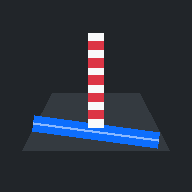

Budowa All-in-One
Obwodnica Krosna Odrzańskiego, DK29
Adres serwera
Aplikacja pokazuje dane z serwera stojącego na budowie. Wpisz jego adres — zapamiętam go na stałe.
Nie znam adresu
To adres komputera, na którym uruchomiono docker compose up,
z portem 8000. Sprawdzisz go na tym komputerze komendą
ipconfig (Windows) albo ip a (Linux) —
szukaj adresu zaczynającego się od 192.168.
Telefon musi być w tej samej sieci Wi-Fi co serwer.